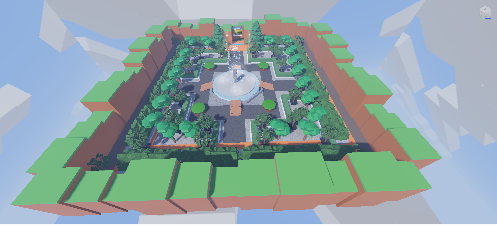

Sung's Website
Welcome to my site!
About Me
Hi I'm Sung. I am a one of the campers who made game with a roblox. I am currently 16 years old, and I will be grade 11 at coming september.
My Projects
In my journey of developing a game, I made a deliberate choice to create an inclusive experience that caters to a diverse player base. To achieve this, I designed a central hub—the main lobby—where players can gather, interact, and explore. From there, I implemented teleporters wich makes players capable of dixcovering various game. These teleporters serve as gateways to adventure, allowing players to seamlessly transition between different games. Right now, I was only capable of making two games, but I hope I can farther develop and add more games in near futher!
 main lobby
 Hero Tycoon
Hero Tycoon
 Glass Game
Glass Game
Some Cool Stuff I Like
Origami is one of my favourite hobby. It helps me to practice concentration with its step-by-step instructions. Origami encourages patience and attention to detail, which can spill over into other aspects of my life.
.
I looked into this video in ordeer to learn basics to making roblox game.